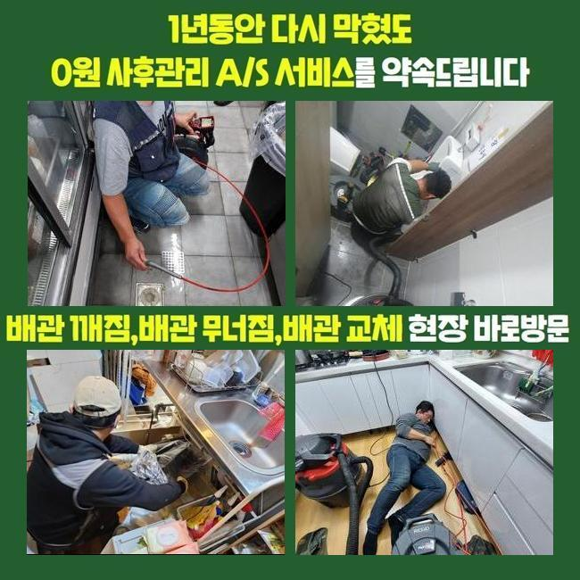
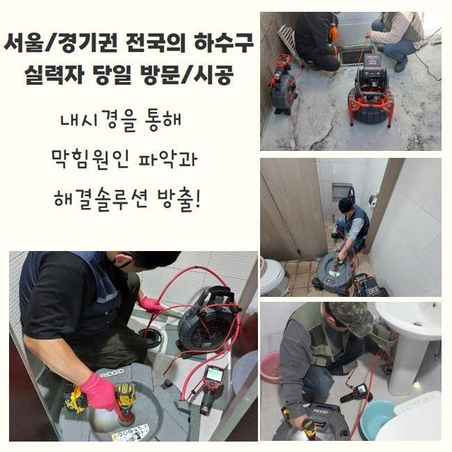
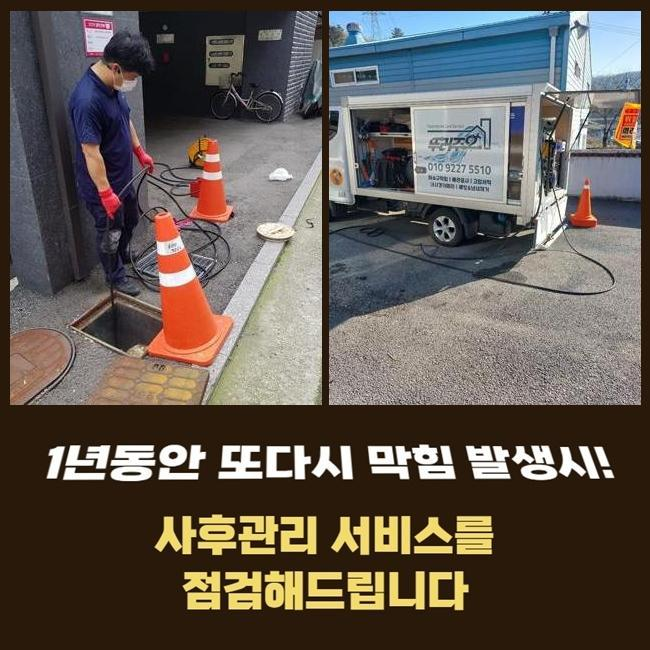
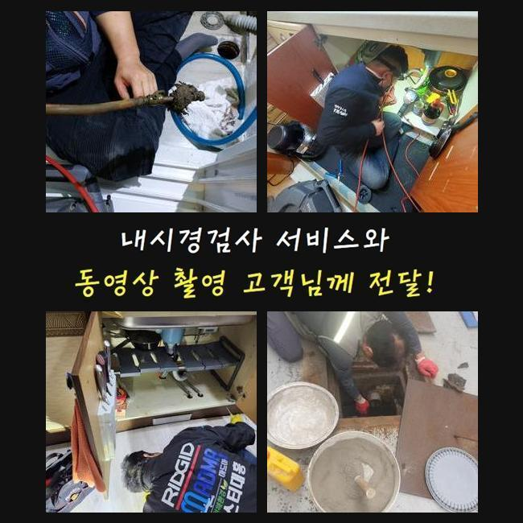
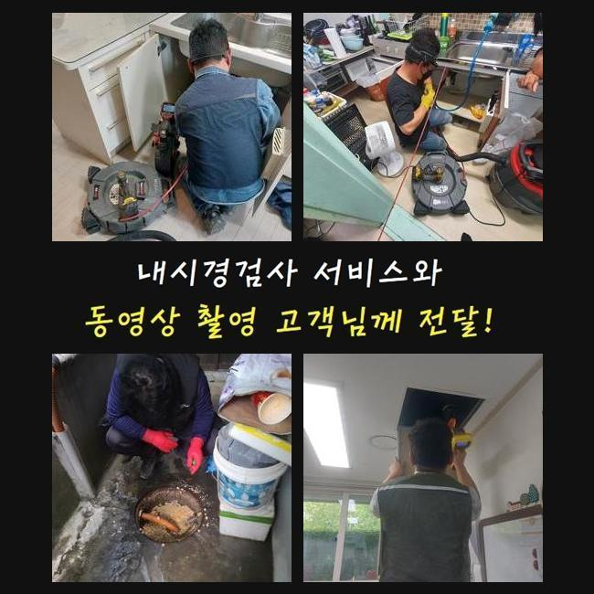

🏠 천안 쌍용동싱크대막힘 부성1동 맨홀역류 누수공사
천안 쌍용동 싱크대막힘 전문 시공 후기

📋 작업 개요
- 위치: 천안 쌍용동, 쌍용동, 천안
- 서비스 유형: 싱크대막힘, 하수구막힘, 배관막힘, 맨홀막힘, 누수수리, 역류해결, 뚫는업체, 배관청소, 고압세척, 설비공사, 악취차단
- 작업 일시: 2025. 6. 6. 12:46
- 업체명: 하수구수사대 (010-5615-2118)
🔍 문제 상황
천안 쌍용동싱크대막힘 부성1동 맨홀역류 누수공사
근처의 건물에서 하수관의 차단으로 인해 장사를 할 수가 없다며 빠르게 찾아와달라고 의뢰 내역을 접수했어요
레스토랑이나 식당은 하수구 설비가 고장나는 문제점으로 인해 수도시설을 활용하지 못하게 된다면 당장 요리부터 못하니 한동안 문을 닫아야 할겁니다
하수구를 빠르게 뚫어줘야 영업불가로 인한 피해를 완화할 수 있으므로 지체없이 출장가서 보완해드린다고 약속드렸어요
맞이해주신 고객님께서는 바닥부에 설치된 배수로에서 물 배출이 느릿해지고 옥외에 마련된 하수구 물이 올라오는 현상도 빚어지는 사태라고 하셨습니다
식당 안에 달려있는 주방의 배수구 쪽도 체크하고 옥외 배관로까지도 수습을 해드려야 하므로 간단하지만은 않은 하수구작업이 예정되어 있었습니다
막혀있는 공간을 볼 때는 현재 처한 문제점들을 두루 모아서 생각해보고 이번 업무의 소요시간을 계산해서 원하시면 알려드립니다
관로가 접해있는 부분이 많다면 여러곳들에 문제가 있다면 개선하는게 좀 더 걸리니 약간 지연될 수 있습니다
실내에 이어 바깥 하수구를 바라봤더니 맨홀부터 부식되어있는 상태였으며 바닥부근에 이르기까지 더러운 오물에 휩싸여서 지저분한 상태였어요
시설면에서의 하자가 일어나지 않게끔 적절한 세기로 조절해서 시공을 끝내드리겠다고 약속드리고 본격적인 관측에 들어갔어요

🔎 원인 분석
💡 전문가 진단: 정밀 진단 장비를 사용하여 슬러지의 고착 여부를 판명하고 타격/세척 작업을 실시했습니다.
💡 전문가 진단: 정밀 진단 장비를 사용하여 슬러지의 고착 여부를 판명하고 타격/세척 작업을 실시했습니다.
💡 전문가 진단: 정밀 진단 장비를 사용하여 슬러지의 고착 여부를 판명하고 타격/세척 작업을 실시했습니다.
💡 전문가 진단: 정밀 진단 장비를 사용하여 슬러지의 고착 여부를 판명하고 타격/세척 작업을 실시했습니다.
불빛을 비춰서 내부를 보자 이물질들이 제법 많더라고요
번들대는 유분기가 여기저기 접착되어 있는 것을 즉각 눈치챌 수 있는 상황이었으므로 보이는 부분의 세척부터 실시해서 시야를 확보해야 했습니다
가까운 쪽의 배수로를 우선 통로를 형성해준 이후에 배관에 넣는 카메라를 내려보내서 확인하게 되는데요
내외부의 하수관들이 연결되어 있는 생김새를 세부적으로 알아낸 다음 고압의 물줄기를 발사해서 강력하게 흡착되어 있는 유분기 어린 슬러지를 세척하기로 단계를 구상했습니다
이렇게 흐릿하다면 카메라를 돌려봐도 선명한 내면을 탐지할 수 없을 듯 해서 석션작업으로 잔수를 빼는 작업을 우선실시해야 했어요
이 석션기기는 마치 청소기처럼 진공을 이용하며 누적된 잔여 오염수와 오물들을 속 시원하게 빨아당겨 없애는 성능을 지니고 있습니다
강력한 끌어당기는 힘으로 견고하지 않은 액체나 고체는 쉽게 호스로 흡입되어 집수통 속으로 모이게 됩니다
점도가 높은 찌꺼기나 벽과 한몸처럼 말라붙은 접착물질은 없애기 힘들어서 석션의 성능으로는 배관을 시원하게 뚫어내는 가망성이 낮아지기는 해요
배관의 사이즈와 상관없이 누락하지 않고 석션 장치를 활용하여 작업할 정도로 배수로 기능을 되돌리는 업무를 잘 끝내려 한다면 항상 써야 하는 장치입니다
석션기기로 배수로 속을 싹 쓸어준 이후에 다음으로 카메라를 내려보냈죠
이 카메라의 기능으로는 흙으로 덮여있는 배관이거나 색다른 식으로 설치된 배관일 때도 놓치는 구석 없이 검사를 해보면서 오물과 오염물질의 밀착도나 연식에 관련한 관측할 수 있어요

🔧 작업 과정
신중하게 모니터링을 해보니 기름기가 잔뜩 고인 기름질들이 다수 발견됐습니다
결과를 내보면 이것들이 위급한 연락을 주신 식당의 확실한 이유일 것이라는 느낌을 받았습니다
알게모르게 배수관 내측으로 새어나간 기름 성분이 점점 유속을 느리게 만들었고 덕지덕지 붙다보니 물이 내려갈 곳을 상실하게 되고 내부 압력이 변화하면서 역류까지 일어난 거였네요
스케일링 및 석션작업으로 안을 세정해 나가면서 하수들이 집합하는 야외 쪽의 하수구도 개선을 해줘야 했습니다
샤프트를 말씀드리자면 장비의 그 끝에는 견고한 갈고리가 달려있는 모양입니다
석션의 흡입으로는 역부족인 뭉쳐버린 거대한 오물이나 장기간 변성된 채 머무르고 있는 고착물질을 타격하거나 갈아낼 수 있습니다
알려드린 효율적인 청소 기기들과 관찰 내시경까지 두루 놓치지 않고 적용해야지 청소가 완수될 수 있으며 올스탑이 되어버린 배관 경로를 확보할 수 있습니다
세부적인 조사에 착수해보았더니 관로가 큰 편에 많이 지저분하여 높은 수압으로 청소하는 방식도 들어가야 한다고 판단했습니다
흡입하고 긁어주는 작업으로 하수의 이동이 어느 정도 나아짐이 느껴졌기에 고압수 청소기계를 넣어서 다른 기법으로 청소했어요
높은 압력으로 응축된 물줄기를 시원스럽게 발사하는 노즐을 잘 조정한 다음에 특히 오물들로 붐비는 구간을 집중타격했습니다
집중력있는 기기의 사용으로 통수불능을 야기했었던 기름 슬러지 물질을 타개했습니다
본작업에 선행하여 카메라를 써서 관로의 형상과 심각도를 밑바탕으로 깔아두고 다양한 스킬을 통한 배관청소를 하수구에 고여있던 물과 찌꺼기들을 제거하는 이번 작업에 탁월한 결과물을 창출했습니다
모든 과정들을 거친 이후에 청소된 내측을 봐줬는데 통로도 훤하게 트이고 찌꺼기 덩어리 하나도 통로 어디에서도 감지되지 않았고 벽면에 있던 기름때들도 떨어져나가서 미끈하게 뚫린 배관의 모습도 인식할 수 있게 됐네요
희뿌연한 색으로 관로에 차있었던 물기도 모두 싹 내려갔으며 입자가 작은 이상물질들도 제거됐어요
아무래도 음식점과 같은 매장은는 식품을 다루는 양이 일반 주택과는 차원이 달라서 사용 중에 하수구가 막히는 위험이 더 크기는 합니다
음식물 쓰레기는 기본이고 식용류 잔여량이 물과 혼입되지 않도록 평상시에 업무하실 때 조심해주셔야 할 부분이 있습니다
하수구가 깨끗해진 걸 확인했다면 출수하고 경과를 보면서 작업이 결함없이 처리되었는지 검사를 해보게 되는데요


✅ 작업 완료
수도꼭지에서 물을 다량 내려보내면서 고압세척 작업을 한 외부하수구까지 주춤대는 느낌 없이 폐수가 잘 되는지를 끝으로 검사해 드리는 절차입니다
쏟아부었던 물기가 시원하게 이동하는 걸 눈에 띄었는데요
하수구 기능을 되돌려드리고 마무리 인사를 드리고서 정리 후 철수했습니다
하수의 처리가 적절하지 못할 때는 별 일 아닐거라는 생각에 자가처리를 해보시려다 관내 상태가 더 나빠질 수 있습니다
전문적인 조치가 필요하시면 빠르게 찾아가서 막힘이 생긴 원인 규명 후 뚫어드리니 기억해 두셨으면 좋겠습니다



⚠️ 베란다 누수 및 방수 관리 방법
- ✅ 비가 많이 올 때 창틀 주변이나 아래층 천장에 얼룩이 생기는지 정기적으로 확인해 보세요.
- ✅ 우수관 주변 실리콘 마감이 들뜨거나 깨진 틈새가 있는지 손상 여부를 수시로 체크하세요.
- ✅ 베란다 바닥 타일의 줄눈(메지)이 소실되면 그 틈으로 물이 침투하여 누수가 유발됩니다.
- ✅ 누수 의심 증상 발견 시 방치하면 아래층 손실이 커지므로 즉시 전문가의 진단을 받으십시오.
💡 핵심 정리
- 확실한 장비 작업(내시경 점검 및 샤프트 스케일링)으로 원인을 뿌리 뽑습니다.
- 작업 후 1년 이내에 동일한 부위 재발 시 100% 무상 A/S 서비스를 보장합니다.
- 서울 · 경기 · 인천 전 지역에 24시간 언제든 긴급 출동할 수 있도록 항시 대기 중입니다.
❓ 자주 묻는 질문 (FAQ)
🚨 천안 쌍용동 싱크대막힘 문제로 고민이신가요?
정확한 원인 진단과 확실한 시공으로 재발 없는 해결을 약속드립니다.
24시간 긴급 출동 | 서울 · 경기 · 인천 전지역 | 1년 내 재발 시 무상 A/S